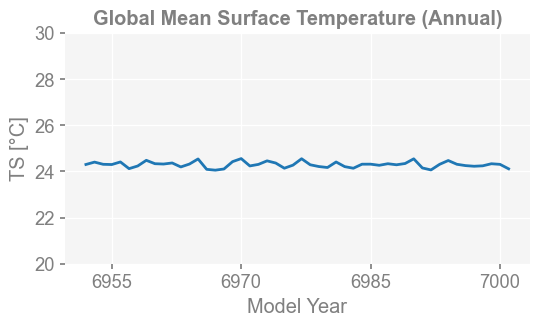
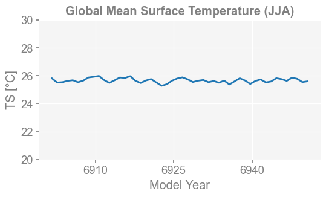
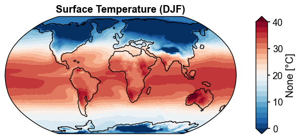
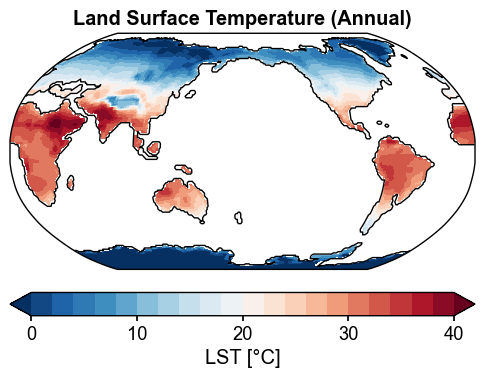
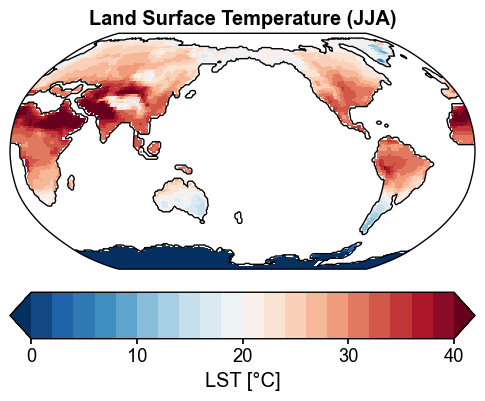
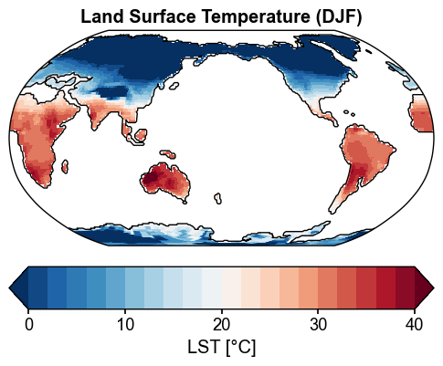
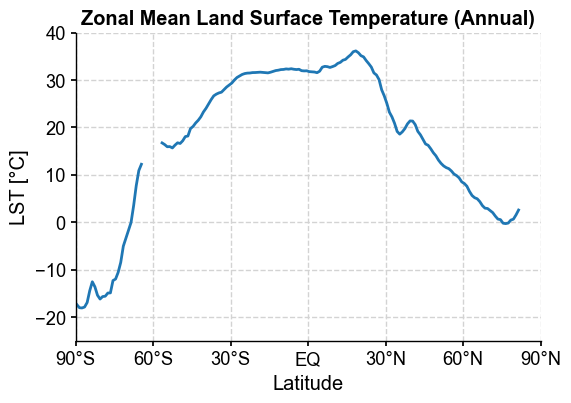
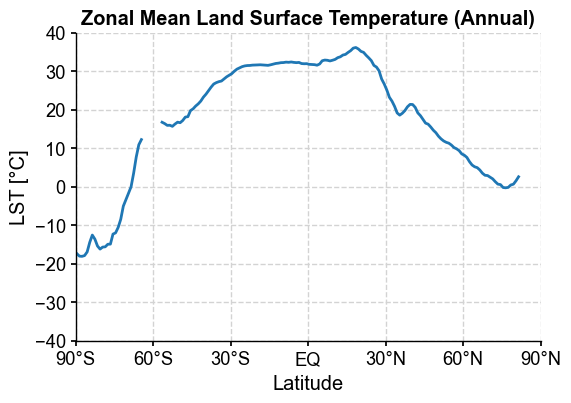
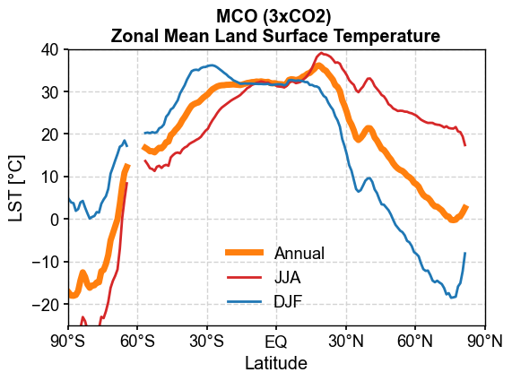
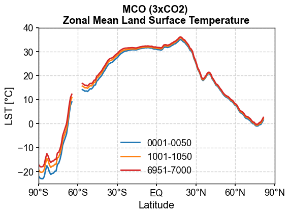

Diagnostics: ATM#
[2]:
%load_ext autoreload
%autoreload 2
import os
os.chdir('/glade/u/home/fengzhu/Github/x4c/docsrc/notebooks')
import numpy as np
import x4c
print(x4c.__version__)
2024.4.14b0
Load a postprocessed CESM timeseries case#
[3]:
dirpath = '/glade/campaign/univ/ubrn0018/fengzhu/CESM_output/timeseries/b.e13.B1850C5.ne16_g16.icesm131_d18O_fixer.Miocene.3xCO2.005'
case = x4c.Timeseries(dirpath)
>>> case.root_dir: /glade/campaign/univ/ubrn0018/fengzhu/CESM_output/timeseries/b.e13.B1850C5.ne16_g16.icesm131_d18O_fixer.Miocene.3xCO2.005
>>> case.path_pattern: comp/proc/tseries/month_1/casename.mdl.h_str.vn.timespan.nc
>>> case.grid_dict: {'atm': 'ne16', 'lnd': 'ne16', 'rof': 'ne16', 'ocn': 'g16', 'ice': 'g16'}
>>> case.vars_info created
ts:GMST#
[3]:
x4c.set_style('web', font_scale=1.2)
case.calc('ts:GMST:ann', load_idx=-1)
fig, ax = case.plot('ts:GMST:ann')
>>> case.ds["TS"] created
>>> case.diags["ts:GMST:ann"] created

[4]:
case.calc('ts:GMST:6,7,8', load_idx=-1)
fig, ax = case.plot('ts:GMST:6,7,8')
>>> case.ds["TS"] already loaded; to reload, run case.clear_ds("TS") before case.load("TS")
>>> case.diags["ts:GMST:6,7,8"] created

map:TS#
[5]:
x4c.set_style('journal', font_scale=1.2)
case.clear_ds('TS')
case.calc('map:TS:ann', load_idx=-1)
fig, ax = case.plot('map:TS:ann')
Regridding from [1, 13826] to [180, 360]
>>> case.ds["TS"] created
>>> case.diags["map:TS:ann"] created
>>> case.ds["SSH"] created
[6]:
case.calc('map:TS:-12,1,2', load_idx=-1)
fig, ax = case.plot('map:TS:-12,1,2')
>>> case.ds["TS"] already loaded; to reload, run case.clear_ds("TS") before case.load("TS")
>>> case.diags["map:TS:-12,1,2"] created
>>> case.ds["SSH"] already loaded; to reload, run case.clear_ds("SSH") before case.load("SSH")

map:LST#
[7]:
x4c.set_style('journal', font_scale=1.2)
case.clear_ds('TS')
case.calc('map:LST:ann', load_idx=-1)
fig, ax = case.plot(
'map:LST:ann',
figsize=(6, 6),
cbar_kwargs={'orientation': 'horizontal', 'aspect': 10, 'pad': 0.05},
)
x4c.showfig(fig)
x4c.savefig(fig, './figs/map_LST_ann.png', dpi=300)
Regridding from [1, 13826] to [180, 360]
>>> case.ds["TS"] created
Regridding from [1, 13826] to [180, 360]
>>> case.ds["LANDFRAC"] created
>>> case.diags["map:LST:ann"] created
>>> case.ds["SSH"] already loaded; to reload, run case.clear_ds("SSH") before case.load("SSH")

Figure saved at: "figs/map_LST_ann.png"
[8]:
case.calc('map:LST:6,7,8', load_idx=-1)
fig, ax = case.plot(
'map:LST:6,7,8',
figsize=(6, 6),
cbar_kwargs={'orientation': 'horizontal', 'aspect': 10, 'pad': 0.05},
)
x4c.showfig(fig)
x4c.savefig(fig, './figs/map_LST_JJA.png', dpi=300)
/glade/u/home/fengzhu/Github/x4c/x4c/core.py:27: AccessorRegistrationWarning: registration of accessor <class 'x4c.core.XDataset'> under name 'x' for type <class 'xarray.core.dataset.Dataset'> is overriding a preexisting attribute with the same name.
@xr.register_dataset_accessor('x')
/glade/u/home/fengzhu/Github/x4c/x4c/core.py:108: AccessorRegistrationWarning: registration of accessor <class 'x4c.core.XDataArray'> under name 'x' for type <class 'xarray.core.dataarray.DataArray'> is overriding a preexisting attribute with the same name.
@xr.register_dataarray_accessor('x')
>>> case.ds["TS"] already loaded; to reload, run case.clear_ds("TS") before case.load("TS")
>>> case.ds["LANDFRAC"] already loaded; to reload, run case.clear_ds("LANDFRAC") before case.load("LANDFRAC")
>>> case.diags["map:LST:6,7,8"] created
>>> case.ds["SSH"] already loaded; to reload, run case.clear_ds("SSH") before case.load("SSH")

Figure saved at: "figs/map_LST_JJA.png"
[9]:
case.calc('map:LST:-12,1,2', load_idx=-1)
fig, ax = case.plot(
'map:LST:-12,1,2',
figsize=(6, 6),
cbar_kwargs={'orientation': 'horizontal', 'aspect': 10, 'pad': 0.05},
)
x4c.showfig(fig)
x4c.savefig(fig, './figs/map_LST_DJF.png', dpi=300)
>>> case.ds["TS"] already loaded; to reload, run case.clear_ds("TS") before case.load("TS")
>>> case.ds["LANDFRAC"] already loaded; to reload, run case.clear_ds("LANDFRAC") before case.load("LANDFRAC")
>>> case.diags["map:LST:-12,1,2"] created
>>> case.ds["SSH"] already loaded; to reload, run case.clear_ds("SSH") before case.load("SSH")

Figure saved at: "figs/map_LST_DJF.png"
[WARNING] yaksa: 10 leaked handle pool objects
zm:LST#
[23]:
x4c.set_style('journal', font_scale=1.2)
case.calc('zm:LST:ann', load_idx=-1)
fig, ax = case.plot(
'zm:LST:ann',
figsize=(6, 4)
)
>>> case.ds["TS"] already loaded; to reload, run case.clear_ds("TS") before case.load("TS")
>>> case.ds["LANDFRAC"] already loaded; to reload, run case.clear_ds("LANDFRAC") before case.load("LANDFRAC")
>>> case.diags["zm:LST:ann"] created

[24]:
x4c.set_style('journal', font_scale=1.2)
case.calc('zm:LST:6,7,8', load_idx=-1)
fig, ax = case.plot(
'zm:LST:6,7,8',
figsize=(6, 4)
)
>>> case.ds["TS"] already loaded; to reload, run case.clear_ds("TS") before case.load("TS")
>>> case.ds["LANDFRAC"] already loaded; to reload, run case.clear_ds("LANDFRAC") before case.load("LANDFRAC")
>>> case.diags["zm:LST:6,7,8"] created

[25]:
x4c.set_style('journal', font_scale=1.2)
case.calc('zm:LST:-12,1,2', load_idx=-1)
fig, ax = case.plot(
'zm:LST:-12,1,2',
figsize=(6, 4)
)
>>> case.ds["TS"] already loaded; to reload, run case.clear_ds("TS") before case.load("TS")
>>> case.ds["LANDFRAC"] already loaded; to reload, run case.clear_ds("LANDFRAC") before case.load("LANDFRAC")
>>> case.diags["zm:LST:-12,1,2"] created

[29]:
x4c.set_style('journal_spines', font_scale=1.2)
fig, ax = case.plot('zm:LST:ann', figsize=(6, 4), label='Annual', color='tab:orange', lw=5)
ax = case.plot('zm:LST:6,7,8', ax=ax, label='JJA', color='tab:red')
ax = case.plot('zm:LST:-12,1,2', ax=ax, label='DJF', color='tab:blue')
ax.set_title('MCO (3xCO2) \nZonal Mean Land Surface Temperature', weight='bold')
ax.legend(loc='lower center')
x4c.showfig(fig)
x4c.savefig(fig, './figs/zm_LST_compare_seasons.png', dpi=300)

Figure saved at: "figs/zm_LST_compare_seasons.png"
[11]:
x4c.set_style('journal_spines', font_scale=1.2)
case.clear_ds()
case.calc('zm:LST:ann', load_idx=0)
fig, ax = case.plot('zm:LST:ann', figsize=(6, 4), label='0001-0050', color='tab:blue')
case.clear_ds()
case.calc('zm:LST:ann', load_idx=20)
ax = case.plot('zm:LST:ann', ax=ax, label='1001-1050', color='tab:orange')
case.clear_ds()
case.calc('zm:LST:ann', load_idx=-1)
ax = case.plot('zm:LST:ann', ax=ax, label='6951-7000', color='tab:red')
ax.set_title('MCO (3xCO2) \nZonal Mean Land Surface Temperature', weight='bold')
ax.legend(loc='lower center')
x4c.showfig(fig)
x4c.savefig(fig, './figs/zm_LST_compare_spin-ups.png', dpi=300)
Regridding from [1, 13826] to [180, 360]
>>> case.ds["TS"] created
Regridding from [1, 13826] to [180, 360]
>>> case.ds["LANDFRAC"] created
>>> case.diags["zm:LST:ann"] created
Regridding from [1, 13826] to [180, 360]
>>> case.ds["TS"] created
Regridding from [1, 13826] to [180, 360]
/glade/work/fengzhu/conda-envs/xpp-env/lib/python3.11/site-packages/xesmf/backend.py:56: UserWarning: Latitude is outside of [-90, 90]
warnings.warn('Latitude is outside of [-90, 90]')
>>> case.ds["LANDFRAC"] created
>>> case.diags["zm:LST:ann"] created
Regridding from [1, 13826] to [180, 360]
>>> case.ds["TS"] created
Regridding from [1, 13826] to [180, 360]
>>> case.ds["LANDFRAC"] created
>>> case.diags["zm:LST:ann"] created

Figure saved at: "figs/zm_LST_compare_spin-ups.png"
[ ]: